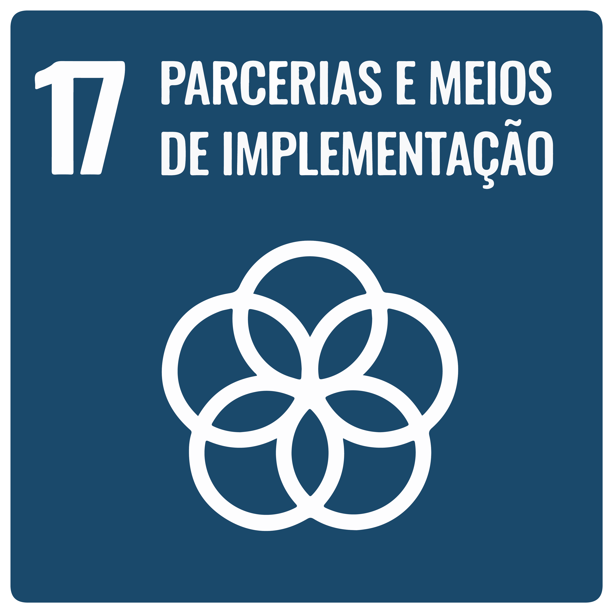
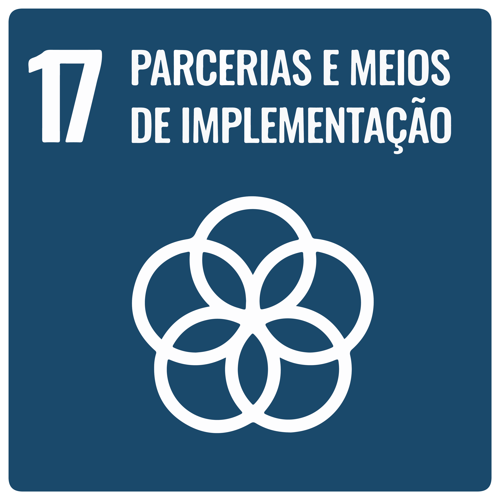

Realização
Fundação Florestal
Responsável técnico
Waldnir Gomes Moreira, gestor da APA Itupararanga
Equipe técnica
Viviane Rodrigues de Oliveira, diretora executiva da SOS Itupararanga
Giovanni Loureiro Miraglia, gestor ambiental da SOS Itupararanga
Esllen Moreira, gestora do Parque Estadual Jurupará
Tarcísio de Freitas
Governador do Estado de São Paulo
Natália Resende
Secretária de Meio Ambiente, Infraestrutura e Logística
Anderson Marcio de Oliveira
Secretário Executivo
Jônatas Souza da Trindade
Subsecretário de Meio Ambiente
Mario Mantovani
Presidente da Fundação Florestal
Rodrigo Levkovicz
Diretor Executivo da Fundação Floresta
A Fundação Florestal comprometida com o cumprimento dos 17 Objetivos do Desenvolvimento Sustentável (ODS), que integram a agenda 2030 da ONU, destaca os objetivos diretamente relacionados neste trabalho junto à APA Itupararanga e ao Parque Estadual Jurupará.
 
